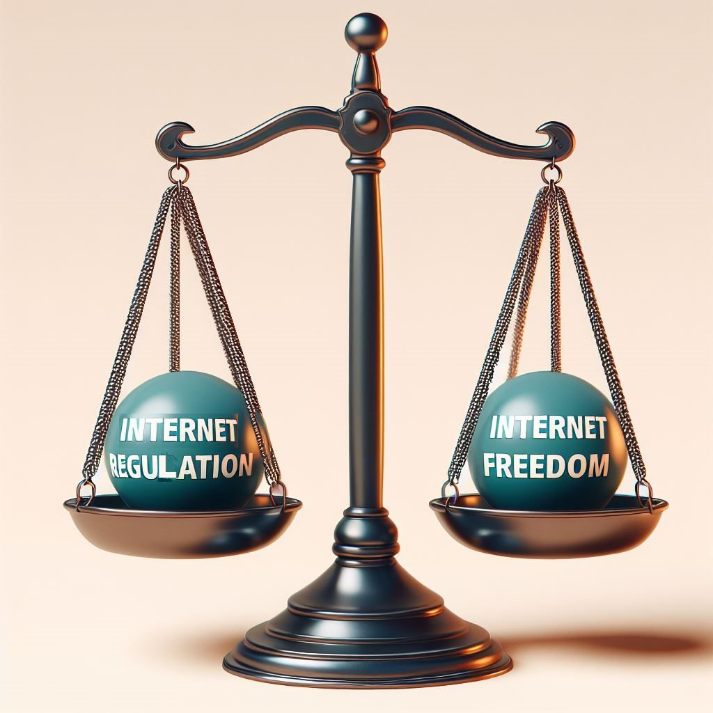

Should the Internet be Monitered and Regulated?
As the internet has become a central aspect of our lives, the question of how much it should be monitored and regulated has sparked significant debate. On one hand, there is a strong case for oversight to protect individuals from cybercrime, disinformation, and harmful content. On the other hand, many argue that too much regulation threatens privacy, innovation, and freedom of expression. Striking a balance is essential, with limited regulation aimed at protecting vulnerable users and public safety while avoiding the risks
of overregulation. This discussion presents a balanced perspective that leans toward minimal regulation, with certain critical exceptions.

The Case for Limited Regulation
Preserving Privacy and Freedom of Expression A key argument for less internet regulation is the need to protect users' privacy and freedom of expression. The internet allows individuals to share ideas, access information, and communicate freely across the globe. Electronic Frontier Foundation (EFF), a prominent defender of digital rights, argues that overregulation risks infringing on these fundamental freedoms. Government or corporate monitoring of online activities could easily turn into surveillance, where users' private communications, browsing habits, and personal data are tracked without consent.